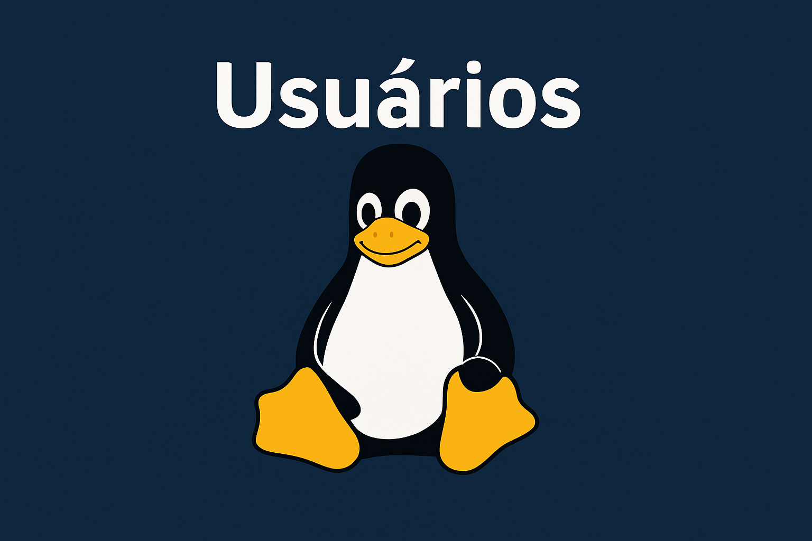
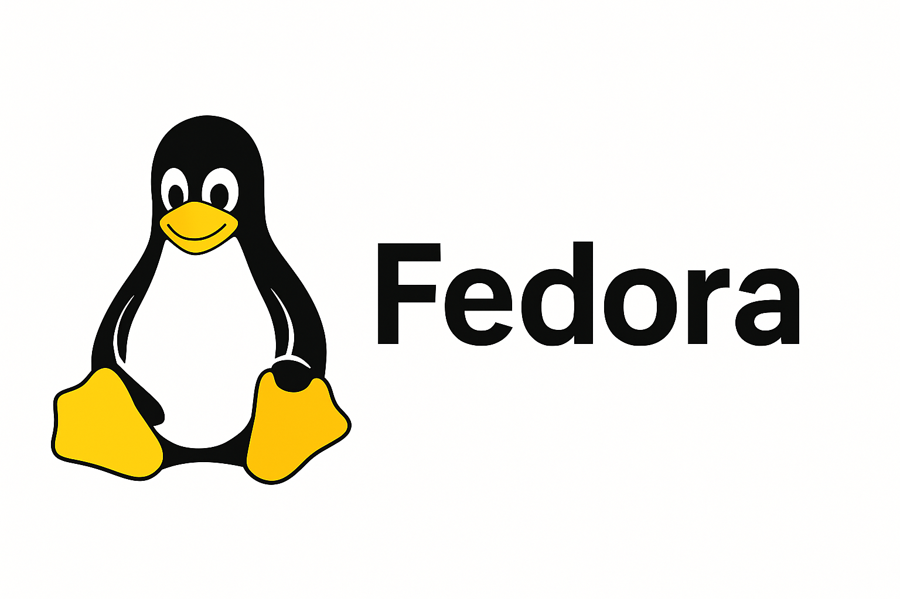
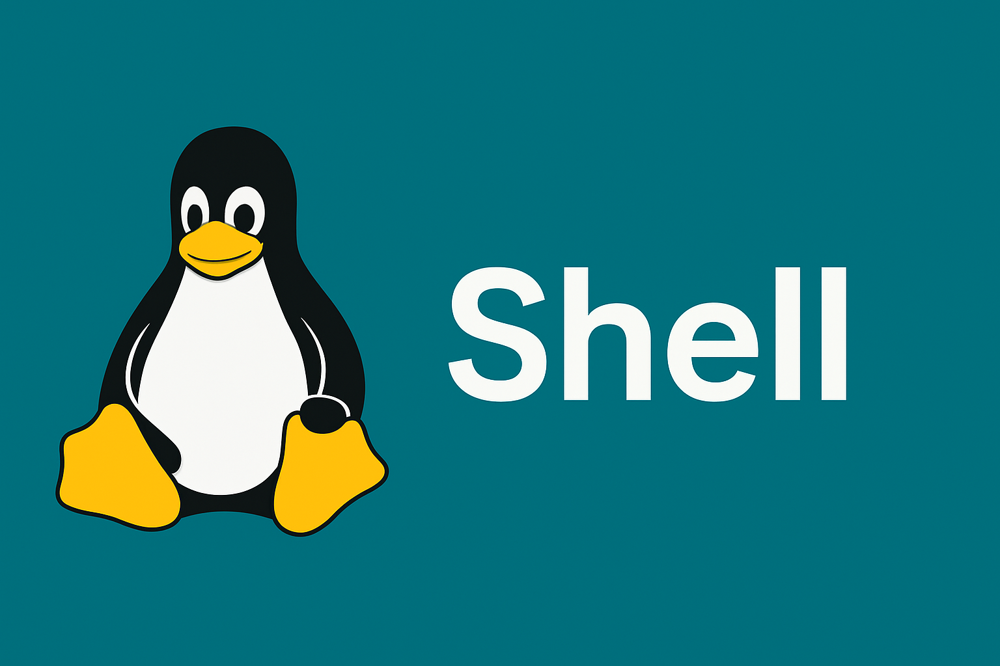
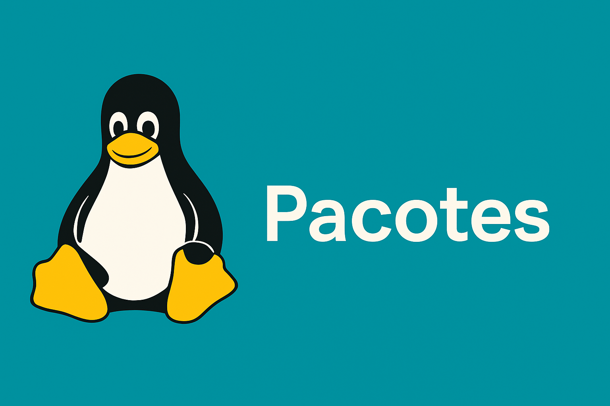

Linux
Historia
Introdução
Sistema operacional livre e de código aberto, usado em computadores, servidores, celulares e dispositivos embarcados. Conhecido por segurança, estabilidade e flexibilidade.
Criação
Criado em 1991 por Linus Torvalds, inspirado no Unix. Em 1992, entrou na Licença GPL, permitindo que todos pudessem usar e modificar.
Impacto
Impacto
Presente em servidores, supercomputadores, Android, TVs, roteadores e até satélites.
Comandos
Pastas
mkdir -> criar pasta
cd -> entrar
cd .. -> voltar
ls -> listar
rmdir -> apagar pasta vazia
rm -r -> apagar pasta com arquivos
Arquivos
touch -> criar arquivo
nano/vi -> editar
cat -> mostrar conteúdo
cp -> copiar
mv -> mover/renomear
rm -> apagar
Sistema
Sistema
pwd -> caminho atual
date -> data/hora
df -h -> espaço em disco
uname -r -> versão do kernel
free -h -> uso de memória

Usuários
sudo -> admin
chmod -> permissões de arquivos
chown -> dono do arquivo
WSL Dicas
Abrir: wsl
Atualizar: sudo apt update && sudo apt upgrade -y
Instalar programas: sudo apt install nome_do_programa
Acessar Windows: cd /mnt/c
Distribuições
Ubuntu
Foco em facilidade de uso Ideal para iniciantes Baseado no Debian, com grande comunidade.

Fedora
Voltado para desenvolvedores Sempre com tecnologias recentes Patrocinado pela Red Hat.
Debian
Debion
Estável e confiável Base para várias outras distros (ex: Ubuntu) Muito usado em servidores.
Fundamentos
Kernel
É o núcleo do sistema, responsável por gerenciar hardware, memória, processos e comunicação entre programas.

Shell
Interface de linha de comando que interpreta os comandos do usuário. Exemplo popular: Bash.
Sistema de arquivos
Sistema de arquivos
Organiza dados em uma árvore de diretórios. Tudo é tratado como arquivo: dispositivos, processos e configurações.
Permissões
Define quem pode ler, escrever ou executar arquivos e pastas. Controladas por chmod e chown

Pacotes
Programas são instalados em pacotes. Gestores comuns: apt (Debian/Ubuntu) e dnf (Fedora).